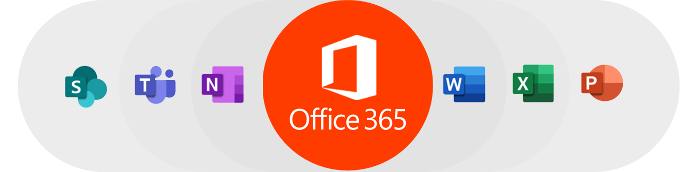

Besoin de maitriser les outils office 365 ? Accompagnez-nous tout au long de cette formation pour vous renforcer dans ce domaine !
Dans cette formation Office 365, vous allez apprendre à travailler avec les apps de Microsoft Office Online, la version légère et gratuite des outils bureautique de la suite Microsoft Office.
Pendant cette formation, vous allez apprendre à utiliser les fonctionnalités communes, notamment la création, la modification et le partage de document pour la collaboration. Ces outils bureautiques vont vous permettre d'enrichir votre travail. Comme vous allez apprendre Microsoft PowerPoint, vous allez créer une présentation, y insérer des images, appliquer des transitions, partager et coéditer la présentation PowerPoint. Vous allez aussi apprendre à gérer votre bureautique avec OneNote Online, vous allez créer et organiser un bloc-notes, y insérer des liens, insérer ou supprimer une image, insérer des tableaux, supprimer ou restaurer une page et supprimer le traitement de texte. Également, vous allez apprendre à manipuler les classeurs avec Microsoft Excel, vous allez créer et mettre en forme un tableur, faire des calculs simples, faire des mises en forme conditionnelles et appliquer des filtres, apprendre les formules de calculs les plus courantes, créer des graphiques, etc. Vous allez apprendre aussi à gérer OneDrive et faire les synchronisations avec votre ordinateur pour sauvegarder votre travail, comme vous allez apprendre à partager des fichiers et documents à l'aide de OneDrive. Enfin, vous allez apprendre à travailler avec la messagerie Outlook sous Office 365 et comment organiser votre boite de réception, comment travailler avec le calendrier et la gestion de tâches et des contacts.
Pas de panique, durant cette formation, vous serez accompagné d'un expert présent pour répondre à vos moindres questions ou résoudre les problèmes que vous rencontrerez. Il vous suffira d'accéder à la rubriuqe "Aide" ou "Support & Services"
Cette formation Office 365 repose sur des démonstrations de cas pratiques où vous allez voir l'application de l'ensemble des notions expliquées par l'expert pendant les vidéos tutoriel disponible sur la plateforme YouTube.
Bénéficiez de cette formation pour obtenir la licence Office inclus dans notre offre. Obtenez dès maintenant le Pack Office !
Utilisé par plus de 50 000 professionnels du marketing.
0 connaissances techniques requise.
Satisfait ou remboursé sous 30 jours.